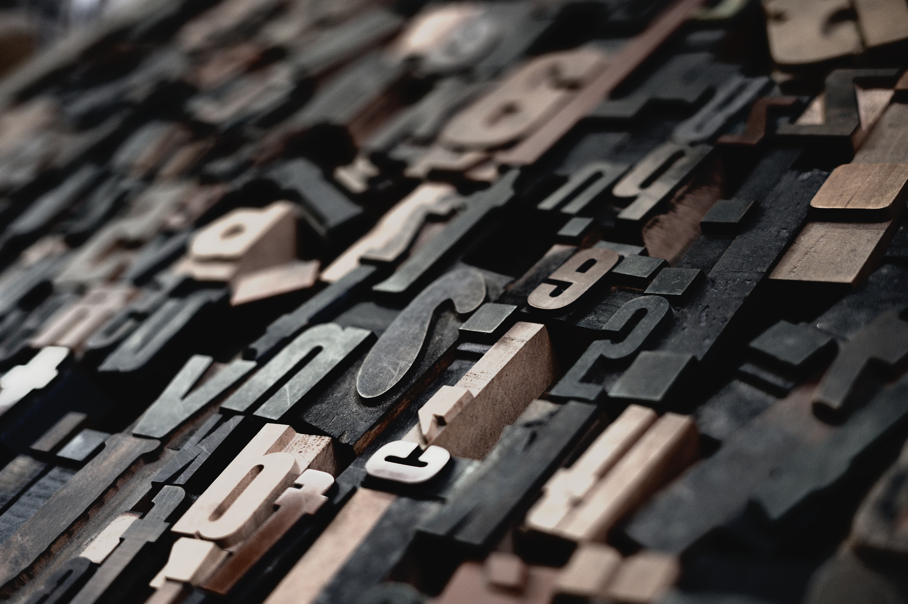
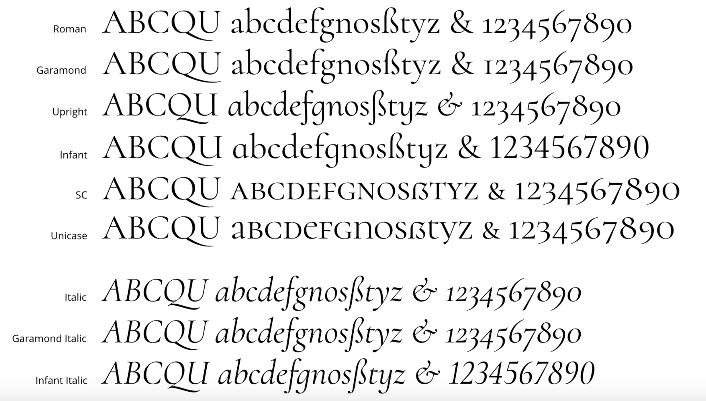
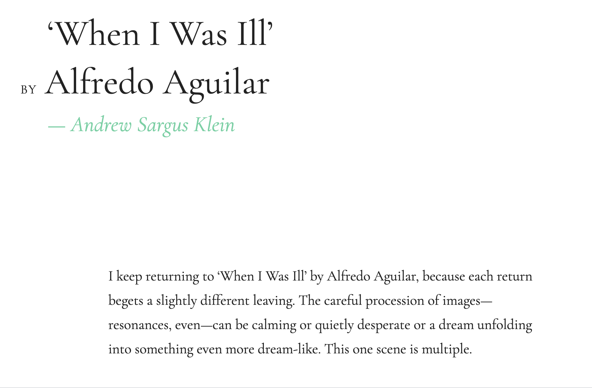
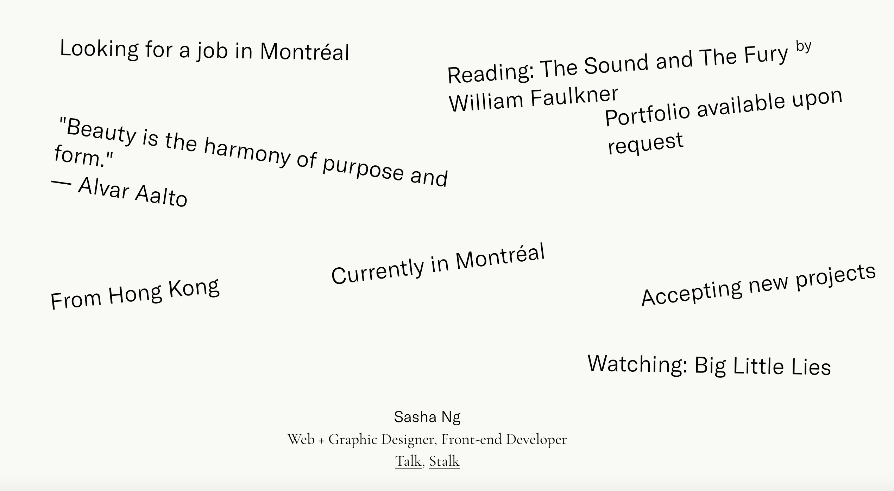
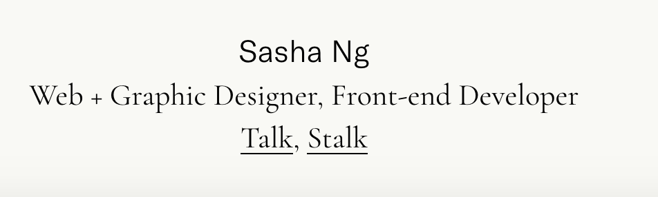

Cormorant Typeface
Cormorant was hand drawn and designed by Christian Thalmann of Catharsis Fonts. Cormorant was inspired by the Garamond typeface. Even with this inspiration, Thalmann did not use Garamond or any other font as a starting point when he created Cormorant. Coromant was designed as a display text. The family has five different versions. Cormorant is the standard version. The other four are: Cormorant Garamond which is more suitable as a text face, Cormorant Infant, Cormorant Unicase which mixes lowercase and uppercase forms, and Cormorant Upright is an italic design that sits upright rather than at an angle. Each version is available in a range of weights.
 The website wilderness uses Cormorant as its primary font. I think that it is used effectively. The website is very open and free. The font size and line height allows the website to convey this theme. It’s not very hard to read large amounts of text. I can easily read the headers and subheaders the font, with its large size.
 Sasha Ng’s website also used Cormorant typeface. It is used as a secondary font. I think that it is used effectively. It pairs well with the second, primary font and distinguishes them from one another.
I really like the Cormorant typeface. It is simple and clean, but still has style. I find that I like it best when used as a header or subheader. When it’s font size is increased, the style of it is enhanced more so than when it is the size of paragraph font. In the website, wilderness, on every page my eyes were instantly drawn to the titles.
I think it’s personality is regal and sharp; it is meant to stand tall and command attention. This is particularly true in its uppercase form. It is elegant.